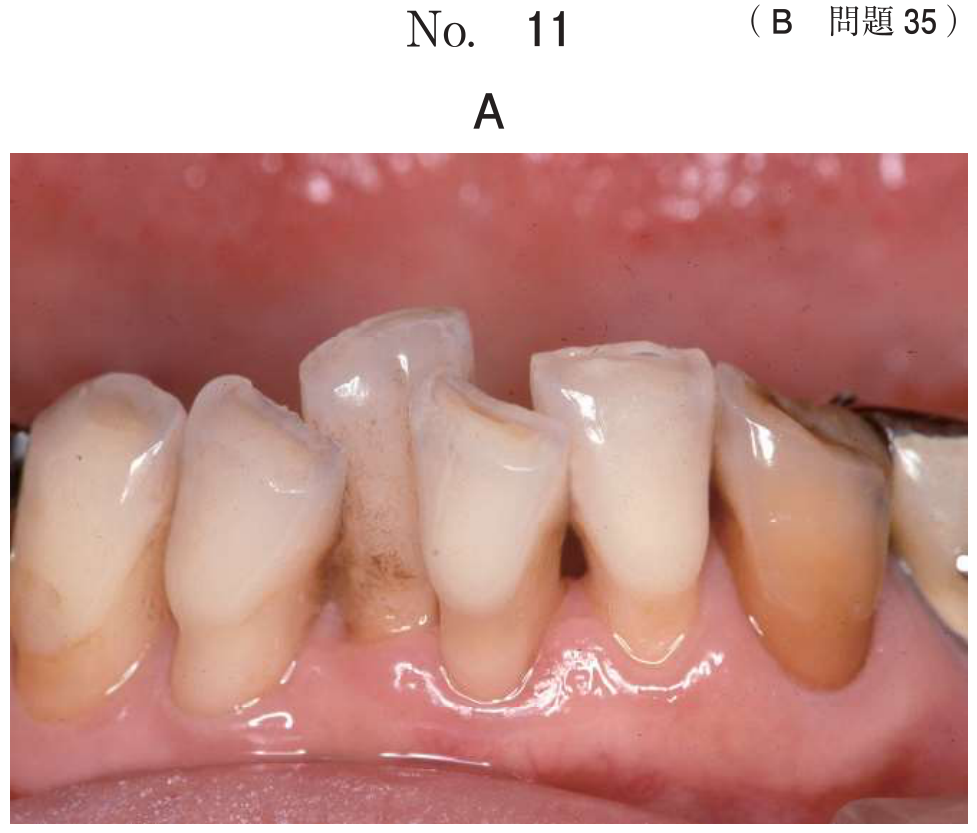
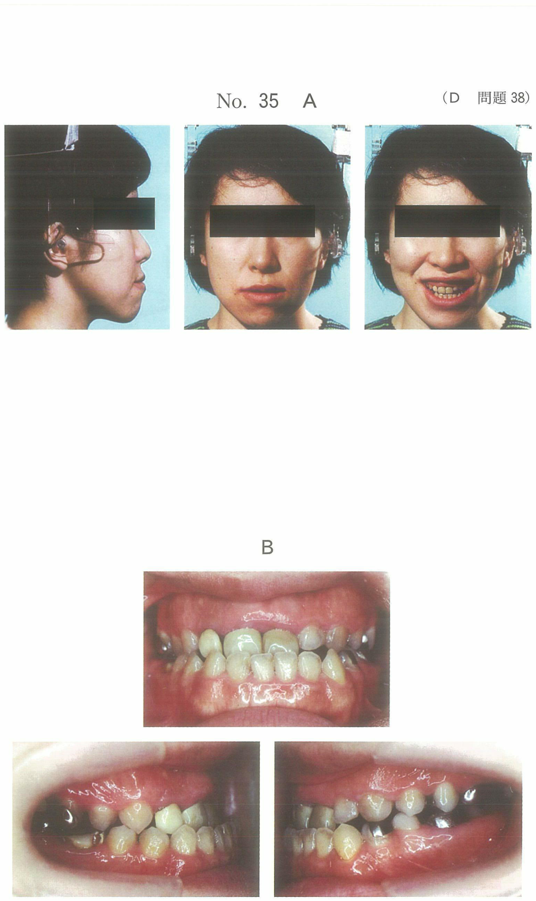

根尖性歯周炎総論
定義
歯髄が壊死し、根尖歯周組織に化学的刺激や細菌感染が加わり炎症が生じた状態。
感染根管：生体の防御反応が起こらない失活状態にある領域であり、自然治癒は生じない。
原因
1. 物理的刺激
- 外傷（転倒、衝突など）
- 外傷性咬合、硬固物の咀嚼
- 不適合な補綴装置（咬合の高い歯冠修復物）
- 抜髄処置や根管治療時の器具・充填材の突き出し
2. 化学的刺激
- 壊死歯髄やその分解産物（インドール、スカトールなど）
- 根管浸出液
- 根管治療薬剤、歯科治療材料
3. 細菌感染
- 不良な根管充填（根管内細菌の残存）
- コロナルリーケージ（歯冠側からの再感染）
根管充填後に歯冠修復部の辺縁から細菌が根管内へ再侵入すること。不適合な補綴装置や二次齲蝕が原因となる。
細菌感染の経路
| 経路 | 原因 |
|---|---|
| 歯冠側から | 齲蝕の進行、歯の亀裂・破折、コロナルリーケージ |
| 根尖部から （上行性・逆行性感染） |
歯周ポケットから根管側枝・根尖孔を経由 |
原因歯の特定法
根尖部の触診
双手診で行い、大きさ、硬軟、圧痛の有無などを調べる。
瘻孔からのポイント挿入
瘻孔の位置は原因歯と一致しないことがあるため、ガッタパーチャポイントを瘻孔に挿入してエックス線撮影を行い、原因歯を特定する。
診査・検査
| 検査 | 所見 |
|---|---|
| 温度診 | 反応なし（歯髄失活のため） |
| 歯髄電気診 | 反応なし |
| 打診 | 打診痛あり（特に垂直打診） |
| エックス線 | 根尖部透過像（慢性の場合） |
急性歯髄炎と急性根尖性歯周炎の鑑別
| 項目 | 急性歯髄炎 | 急性根尖性歯周炎 |
|---|---|---|
| 痛みの定位 | 悪い（放散痛） | よい |
| 温度診 | 反応あり（温熱で増悪） | 反応なし |
| 打診痛 | ±（全部性炎では＋） | ＋＋ |
| 歯髄生活反応 | あり | なし |
過去問
35歳の女性。上顎右側第一小臼歯の咬合時の違和感を主訴として来院した。10年前にかかりつけ歯科医で処置を受けたが、2週前から自覚するようになったという。自発痛はないが、打診に反応がある。プロービング深さは全周3mm以下であった。診察の結果、慢性根尖性歯周炎と診断した。初診時の口腔内写真（別冊No.17A）とエックス線画像（別冊No.17B）を別に示す。
原因として考えられるのはどれか。3つ選べ。

b 不良な根管充填
c 不適合な補綴装置
d 辺縁歯槽骨の吸収
e コロナルリーケージ
【解説】慢性根尖性歯周炎の原因として、b 不良な根管充填（根管内の細菌残存）、c 不適合な補綴装置（辺縁の不適合）、e コロナルリーケージ（歯冠側からの再感染）が考えられる。a 前装部の破損は審美的問題、d 辺縁歯槽骨の吸収は歯周炎の所見で根尖性歯周炎の原因ではない。
56歳の女性。上顎右側臼歯部の疼痛を主訴として来院した。7〜4┛は5〜10年前に治療を受けたが、原因となる歯がわからないまま鈍い痛みが持続しているという。初診時の口腔内写真（別冊No.21A）とエックス線写真（別冊No.21B）とを別に示す。
原因歯の特定に有用なのはどれか。2つ選べ。

b 電気診
c 根尖部の触診
d 顎下リンパ節の触診
e 瘻孔からポイントを挿入しエックス線撮影
【解説】原因歯の特定には、c 根尖部の触診（圧痛の確認）と e 瘻孔からガッタパーチャポイントを挿入してエックス線撮影（瘻孔の起源を特定）が有用。a 温度診と b 電気診は失活歯では反応がなく原因歯の特定には不向き。d 顎下リンパ節の触診は炎症の波及を確認するもので原因歯の特定には直接役立たない。
50歳の男性。下顎右側第一大臼歯の精査のため紹介され来院した。10年前に治療したが、数年前から痛みと腫れとを繰り返しているという。ある処置時の口腔内写真（別冊No.47A）とエックス線写真（別冊No.47B）とを別に示す。
この処置の目的はどれか。1つ選べ。

b 原因菌の採取
c 原因部位の確認
d 根管通過法の前準備
e 歯周ポケット深さの測定
【解説】写真は瘻孔にガッタパーチャポイントを挿入してエックス線撮影を行っている。この処置の目的は c 原因部位の確認である。瘻孔の位置は原因歯と一致しないことがあるため、ポイントを挿入して撮影することで原因歯を特定できる。